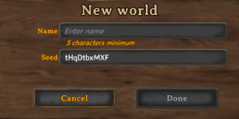
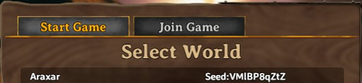

世界种子
本站支持中英文站内搜索。带 ↗ 的链接指向外部网站；各页来源版本见页脚。




世界种子是初始化英灵神殿的伪随机数生成器的地图 种子，决定世界生成。同一游戏版本、同种子布局相同。
创建世界可输入名称种子，种子框预填随机值，可换自定义。
世界种子列表
有用种子
- maypoleplz：起始大陆西边有仲夏柱。
- jWM4fqFdSm：出生点西南岛两处仲夏柱很近。
- wVJCZahxX8：青青草原起始，东西均黑暗林山，西有凛冽雪山。赤血灵鹿近出生，古树长老在南另一岛。
42069lolxd— 霍尔德 可沿海岸线前进，并向南穿越至另一座相连岛屿找到。- sBIkiadtIh：霍尔德起始岛西，黑暗林山、沼泽、雪山较近，后两者在南西。
9934622021— 全部五个 生态区域 位于第一座岛上。（已过时，现在是一座可爱的小岛，有草原、小片黑暗林山和一座小雪山）- WorldEater：首大陆全部主要生态区及霍尔德。
- Gremlin：首大陆超过20蜂巢及霍尔德。
- Swamp：出生东岛长老、邪骨、龙母、亚格鲁斯彼此跑一分钟内，前5生态区丰富，霍尔德希尔德近首领，出生岛周围多个利维坦，首领岛多墓穴及冰洞。
- feret2：出生岛前六生态区、前三首领，赤血灵鹿邻出生。南环形岛中部水道沿线，长老、亚格鲁斯、女巫、希尔德、霍尔德彼此近。世界中心四重利维坦点。东北龙母长老岛，正北无需船依次有灵鹿、邪骨、长老、希尔德、霍尔德、女巫。
困难模式 种子
- yfNmtqZ5mh：小青青草原岛起始，周围黑暗林山，近美湖，对岸巨山。
- lduTRpBHca：较小岛，多青青草原、少黑暗林山，无其他生态区。
- nai4qtPKFt：起始岛无首领，分散、很难。信息过期，现在起始岛有长老和灵鹿。
- xV2pLimZea：寻找难觅冰霜女王，起始岛复杂、附近空旷。
速通种子
- HHcLC5acQt：同大陆三首领、五主要生态区、霍尔德，另两首领各隔一岛。0.148.6地点改变前地图，龙母仍在起始大陆。[ 1 ]
- TxCD10fTIP：同大陆五首领及生态区，两商人近，一个同大陆，另可游泳或木筏到达。
- lSB4fI46nV：起始大陆五生态区、四首领，邻大陆亚格鲁斯，邻岛霍尔德。
- kpI0aXHSfz：起始大陆五首领、祭品、霍尔德，截至0.154.1。
外部链接
参考资料
- ↑ InfernoFPS（2021年二月17日）。“伙计们，我们做到了，找到了最棒的种子”。Reddit。检索于2024年一月21日。
| 攻略 | |
|---|---|
| 玩家 | |
| 战斗 | |
| 生成 | |
| 建材 | |
| 界面 | |
| 世界 | |
| 杂项 | |
| 开发 | |
A world seed is a map seed used to initialize Valheim's pseudorandom number generator that determines how a world is generated. All worlds generated from the same seed will have the same layout for any given game version.
When creating a new world in the main menu, the game opens a dialog where the player can enter the world name and seed. The input field for entering the seed is initially filled with a random seed that can be replaced with a custom seed.
List of world seeds
Useful seeds
maypoleplz— The starting continent has a maypole to the west.jWM4fqFdSm— The island southwest of spawn has two maypole locations very close to each other.wVJCZahxX8— Starting in the Meadows with Black Forest east and west, a Mountain west. Eikthyr is close to the spawn but The Elder is on an other island south.42069lolxd— Haldor can be found by following the coastline and crossing to another attached island on the south.sBIkiadtIh— Haldor can be found on starting island to the West, with Black Forest, Swamp, and Mountains relatively close. Swamp and Mountains to south and west.9934622021— All five first biomes on the first island. (outdated, now a cute small island with meadow, small black forest and little mountain)WorldEater— All main biomes on first continent, including Haldor.Gremlin— Over 20 beehives and Haldor on the first continent.- Swamp — The Elder, Bonemass, Moder and Yagluth are all located on the same island within a minute's running distance from each other, on the island east of spawn. There are plenty of the first 5 biomes on the island. Both Haldor and Hildir can be found very close to the bosses, and there are several Leviathans surrounding the spawn island. The boss island has a lot of crypts, burial chambers and frost caves.
- feret2 - First six biomes on spawn island, First three bosses on spawn island. Eikthyr is next to the spawnpoint, Elder,Yagluth, Bog witch,Hildir, and Haldor are relatively close to eachother in a "ring" island directly south of the spawn, along the "stream" along the middle. There is a quadruple leviathan spawn near the world center. Northeast, there is a Moder&elder island. Directly north of the spawn(No boats), There is an Eikthyr, then Bonemass, elder, hildir,haldor, and bog witch.
Hard seeds
yfNmtqZ5mh— Starting on a little Meadows island surrounded by a Black Forest. Near a beautiful lake and huge mountain on the other side.lduTRpBHca— Starting on a small-ish island with very little Black Forest and mostly Meadows. No other biomes.nai4qtPKFt— No bosses on starting island, bosses are spread out. This is a very hard seed. (outdated, now elder and Eikthyr on starting island)xV2pLimZea— Hunt for the elusive Frost Queen, tangled starting island with nothing nearby.
Speedrun seeds
HHcLC5acQt— Three bosses, five major biomes and Haldor on the same continent, with two bosses each an island away. For maps generated prior to the location changes with version 0.148.6, Moder is still on the starting continent.[1]TxCD10fTIP— Five bosses and biomes on same continent. Two traders close by, one of which is on the same continent, the other can be reached by swimming or rafting.lSB4fI46nV— Five biomes and four bosses on starting continent, Yagluth on continent next to starting island, Haldor on island next to starting continent.kpI0aXHSfz— Five bosses, boss summon items, and Haldor on all starting continent. Current as of update 0.154.1.
External links
- https://valheim-map.world/
- The site, created by wd40bomber7, allows generating worlds online by inserting a seed or uploading a save file and previewing them outside of the game. It displays the complete biome map as seen in-game, and locations of all points of interest, such as Forsaken Altars or dungeons in each biome.
References
- ↑ InfernoFPS (Feb 17, 2021). "we did it boys, we found the best seed". Reddit. Retrieved Jan 21, 2024.
| Guides | |
|---|---|
| Player | Player • Health • Stamina • Eitr • Adrenaline • Death • Forsaken power • Skills • Status effects • Movement speed • Magic • Fishing • Riding • Sleeping • Emotes |
| Combat | |
| Spawning | |
| Building | |
| UI | |
| World | |
| Misc | |
| Development | |